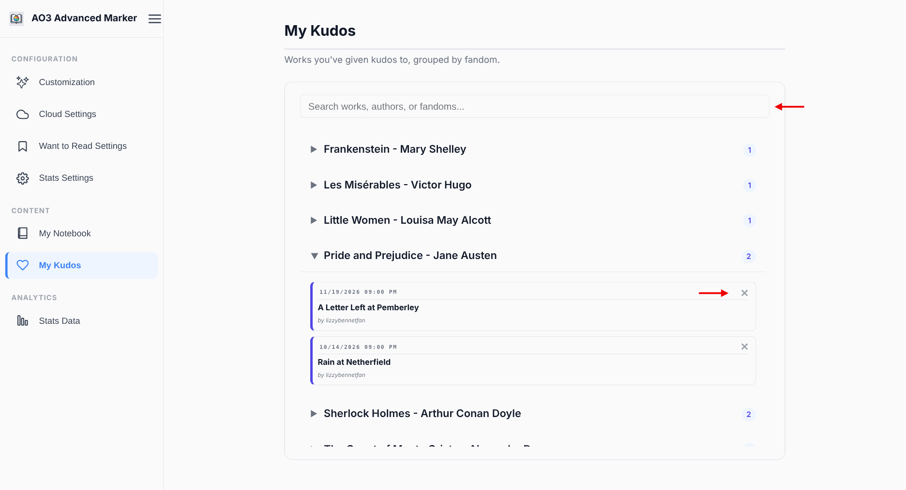
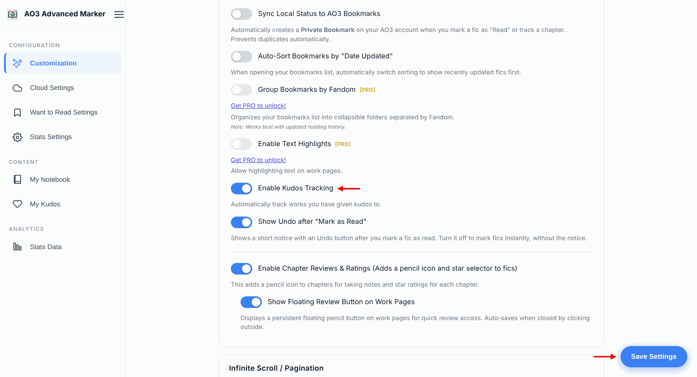

AO3 doesn't show you a list of the fics you've left kudos on. My Kudos keeps that list for you. It's free and on by default.
How Fics Get Into Your List
Just leave kudos as usual. When you click AO3's Kudos ♥ button on a fic, the extension saves it to My Kudos, under the fic's fandom.
The extension can't see kudos you left before tracking was on. To add one of those fics, open it and click Kudos ♥ again: AO3 says you've already left kudos, and the extension adds the fic to your list.
The My Kudos Tab
Open the extension's Options Page and click My Kudos in the sidebar.
- Your fics are grouped by fandom, in alphabetical order, with the number of fics in each. Click a fandom to open it; the most recent kudos come first.
- Each fic shows the date you left kudos, its title and author. Click a fic to open it on AO3.
- Use the search box to find a fic by title, author or fandom.
- To take a fic off your list, click its ✕ and confirm. This only removes it from My Kudos; your kudos on AO3 stays.

Your kudos list is part of your Google Drive backup. See the Google Drive sync guide.
Turning Kudos Tracking Off
Don't want this list? In the Options Page, go to Customization, turn off "Enable Kudos Tracking" and click Save Settings. The extension stops saving new kudos and the My Kudos tab is hidden. Turn it back on to see your list again.
